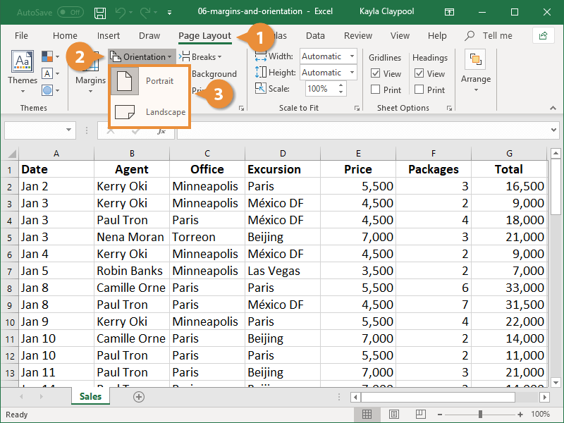

SetPage Orientation
Portrait orientation is the default setting for printing worksheets, but you may want to use landscape orientation instead.
- Click the Page Layout tab.
- Click the Orientation button.
- Select an orientation option:

- Portrait: In Portrait orientation, the paper is taller than it is wide—like a portrait painting.
- Landscape: In Landscape orientation, the paper is wider than it is tall—like a landscape painting.